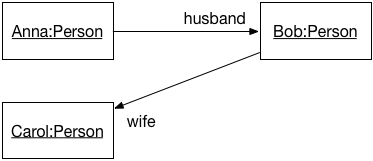
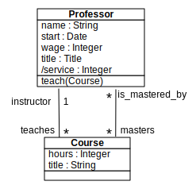

Comments, expressed in natural languages, are often very useful.
But sometimes, they are also ambiguous.
Still, comments cannot avoid some situations.
This work is licensed under a Creative Commons Attribution-NonCommercial 4.0 International License.

Introduction
Invariants
Model Navigation
Property Definition
Operation Specification
Advanced Topics
Conclusion
Appendix - Language Details
OCL stands for «Object Constraint Language».
a OMG standard (see http://www.omg.org/spec/OCL/).
a formal and unambiguous language, but easy to use (even for non mathematicians).
a complement to UML (and also to MOF, but that is another history).
Sometimes, the UML lacks precision. Suppose the following class diagram:

How do you specify that this class only considers people born after 1900?
And how do you specify that cycles are not allowed (i.e., that a person cannot be an ancestor of himself)?
Comments, expressed in natural languages, are often very useful.
But sometimes, they are also ambiguous.
Still, comments cannot avoid some situations.
By adding constraints to modeling elements:
context Person
inv: self.wife->notEmpty() implies self.wife.husband = self and
self.husband->notEmpty() implies self.husband.wife = selfIntroduction
Invariants
Model Navigation
Property Definition
Operation Specification
Advanced Topics
Conclusion
Appendix - Language Details
A class invariant is a constraint that must be verified by all instances of a class, when in a stable state.
The notion of stable state is important: an invariant may be broken during the execution of an operation.
It is commonly accepted that an instance is in a stable state between the execution of two public operations.
Invariants can be placed directly on the modeling element, between braces ({}) or on a comment attached to it:

Invariants may also be placed on a separate document. In this case, the notion of context is important.
context Person inv: self.age < 150
context Person inv: age < 150Every OCL expression is attached to a specific context: a UML modeling element.
The context may be referenced inside the expression using the self keyword.
context Person inv: self.age < 150
context Person inv: self.age > 0The context allows the access to some properties from the attached modeling element.
In the case of a UML class, this means: attributes, query operations, and states (from attached state machines).
context Person
inv:
self.name.size() > 1 and
self.age() >= 0 and
self.oclInState(Single)Introduction
Invariants
Model Navigation
Property Definition
Operation Specification
Advanced Topics
Conclusion
Appendix - Language Details
OCL expressions have no side effect, they cannot modify the model.
A OCL expression refers to the following constituents:
Values of basic types: Integer, Real, Boolean, String, UnlimitedNatural;
Modeling elements, from the associated UML model;
Collections of values or modeling elements.

Operation calls on elements and values use dots:
"Nantes".substring(1,3) = "Nan"Operation calls on collections use arrows:
{1, 2, 3, 4, 5}->size() = 5

To navigate towards an association-class, OCL uses the association-class’ name, in lower cases.
context Student
inv:
-- A student average grade is always greater than 4:
self.grade.value->average() > 4
To navigate from class-association, OCL uses role names:
context Grade inv:
self.students.age() >= 18
self.follows.hours > 3To navigate through a qualified association, OCL uses the qualifier name between square brackets:
context University
-- The name of student 8764423 must be "Martin".
inv: self.students[8764423].name = "Martin"When the qualifier is not specified, the result is a collection:
context University
-- There is at least one student named "Martin":
inv: self.students->exists(each | each.name = "Martin")
Introduction
Invariants
Model Navigation
Property Definition
Operation Specification
Advanced Topics
Conclusion
Appendix - Language Details
OCL allows the definition of new attributes and new operations, and add them to an existing class.
These new properties can be used within other OCL constraints.
Syntax:
context <class-name>
def: <attr-name> : <type> = <ocl-expression>
def: <op-name> (<argument-list) : type = <ocl-expression>Useful to decompose complex expressions without overloading the model.
Examples:
context Professor
def: students() : Bag(Student) =
self.teaches.students
context Department
def: students() : Set(Student) =
self.instructors.teaches.student->asSet()Initial value specification for attributes and roles.
The expression type must conform to the attribute or role type.
Syntax:
context <class-name>::<prop-name>: <type>
init: <ocl-expression>Example:
context Professor::wage : Integer
init: 800Specification of query operation body.
Example:
context University::instructors() : Set(Professor)
body:
self.departments.instructors->asSet()Introduction
Invariants
Model Navigation
Property Definition
Operation Specification
Advanced Topics
Conclusion
Appendix - Language Details
Approach inspired from Abstract Types.
An operation is defined by:
A signature;
A precondition; and
A postcondition.
The precondition constraints the operation input set.
The postcondition specifies the operation semantics.
A precondition is a constraint that must be verified before the execution of the operation.
Specifies what clients must respect to call the operation.
Represented by an OCL expression, preceded by pre:
-- Only professors older than 30 years can be added to the department:
context Department::add(p : Professor) : Integer
pre old: p.age > 30A postcondition is a constraint that must be verified after the execution of the operation.
Specifies what the operation must accomplish.
Represented by an OCL expression preceded by the keyword post:
context Student::age() : Integer
post correct: result = (today - birthday).years()The result operator gives access to the operation return value.
Within a postcondition, there are two available values for each property:
Its value before the operation execution.
Its value after the operation execution.
context Person::birthday()
post: age = age@pre + 1
context Professor::raise(v : Integer)
post: self.wage = self.wage@pre + vThe @pre operator gives access to a property’s value before the operation execution.
When the @pre value of a property is an object, all the values reached from this objects are new:
a.b@pre.c
-- the old value of b, say X,
-- and the new value of c of X
a.b@pre.c@pre
-- the old value of b , say X,
-- and the old value of c of X.
a.b@pre.c -- the new value of b1.c,
c3 a.b@pre.c@pre -- the old value of b1.c,
c1 a.b.c -- the new value of b2.c, c2+`Introduction
Invariants
Model Navigation
Property Definition
Operation Specification
Advanced Topics
Conclusion
Appendix - Language Details
Tuples, Messages, Constraint Inheritance
Definition
Tuple:
A Tuple is a finite sequence of objects or components, where each component is named. The component types are potentially different.
Examples:
Tuple {name:String = 'Martin', age:Integer = 42}
Tuple {name:'Colette', grades:Collection(Integer) = Set{12, 13, 9},
diploma:String = 'Computer Science'}Types are optionals.
The component order is not relevant.
Equivalent expressions:
Tuple {name: String = 'Martin,' age: Integer = 42}
Tuple {name = 'Martin,' age = 42}
Tuple {age = 42, name = 'Martin'}OCL expressions can be used to initialize tuple components:
context University def:
statistics : Set(Tuple(dpt : Department, studentNb:Integer,
graduated: Set(Student), average: Integer)) =
department->collect(each |
Tuple {dpt : Department = each,
studentNb: Integer = each.students()->size(),
graduated: Set(Student) = each.students()->select(graduated()),
average: Integer = each.students()->collect(note)->avg()
}
)Component values are accessible through their names, using the dotted notation:
Tuple {name:String='Martin', age:Integer = 42}.age = 42The attribute statistics defined previously can be used within another OCL expression:
context University inv:
statistics->sortedBy(average)->last().dpt.name = 'Computer Science'
-- CS department has always the best students.OCL expressions can verify that a communication happened, using the «^» (hasSent) operator:
context Subject::hasChanged()
post: observer^update(12, 14)When the arguments are not known, the expression can use the operator «?» (joker):
context Subject::hasChanged() post: observer^update(? : Integer, ? : Integer)The operator «^^» (messages) allows an expression to access a sequence of sent messages:
context Subject::hasChanged()
post: let messages : Sequence(OclMessage) =
observer^^update(? : Integer, ? : Integer) in
messages->notEmpty() and
messages->exists( m | m.i > 0 and m.j >= m.i )The operator OclMessage::result() allows an expression to access an operation return value (signals do not return values).
The operator OclMessage::hasReturned() returns true if the operation returned a value.
context Person::giveSalary(amount : Integer)
post: let message : OclMessage = company^getMoney(amount) in
message.hasReturned()
-- getMoney was sent and returned
and message.result()
-- the getMoney call returned trueLiskov substitution principle (LSP)
In an object-oriented program, if S is a subtype of T, then objects of type T may be replaced with objects of type S (i.e., an object of type T may be substituted with any object of a subtype S).
Subclasses always inherit invariants.
Subclasses can only reinforce an invariant.
A precondition can only be relaxed (contrevariance)
A postcondition can only be reinforced (covariance)
Introduction
Invariants
Model Navigation
Property Definition
Operation Specification
Advanced Topics
Conclusion
Appendix - Language Details
be more precise.
improve documentation.
keep design independent from implementation.
Identify component’s responsibilities.
Class invariants;
Class attributes initialization;
Class derived attributes;
New class properties: attributes and query operations;
Class operations pre- and post-conditions;
Transition guards;
Transition pre and postconditions;
Keep things simple: the goal of constraints is to improve the quality of a specification, and not to make it more complex.
Always combine constraints with natural language: constraints are used to make comments less ambiguous and not to replace them.
Use a tool.
Code generation
Contract generation in Eiffel, Sather, Clojure, etc.
Tool specific contract generation:
Contracts for Java (Cofoja) https://github.com/nhatminhle/cofoja
Java Modeling Language (JML)
valid4j http://www.valid4j.org
Enhanced test case generation.
The Object Constraint Language -– Jos Warmer, Anneke Kleppe.
OCL home page: http://www.klasse.nl/ocl/
OCL tools: http://www.um.es/giisw/ocltools
OMG Specification v2.3.1 http://www.omg.org/spec/OCL/Current/
OMG UML 2.5 Working Group.
Eclipse OCL. https://projects.eclipse.org/projects/modeling.mdt.ocl
OCL Checker (Klasse Objecten)
USE OCL (Mark Richters). http://useocl.sourceforge.net/w/
Dresden OCL. http://www.dresden-ocl.org
Octopus (Warmer & Kleppe). http://octopus.sourceforge.net/
Introduction
Invariants
Model Navigation
Property Definition
Operation Specification
Advanced Topics
Conclusion
Appendix - Language Details
Language Details
Class-level properties are accessed through double-colons.
Class-level attributes:
context Professor inv:
self.wage < Professor::maximumWageClass-level query operations:
context Professor inv:
self.age() > Student::minimumAge()To avoid name conflicts, enumeration literals are preceded by the enumeration name and double-colons:
context Professor
inv: self.title = Title::full implies self.wage > 10+`Nested states (from the attached state machine) are preceded by the container state name and double-colons:
context Department::add(p:Professor)
pre:p.oclInState(Unavailable::Holydays)
-- nested states| Type | Values |
|---|---|
| invalid |
| null, invalid |
| true, false |
| 1, -5, 2, 34, 26524, etc. |
| 1.5, 3.14, etc. |
| ``To be or not to be…'' |
| 0, 1, 2, 42, … , * |
Type | Description | Obtained from | Examples |
|---|---|---|---|
| unordered set. | Simple navigation | {1, 2, 45, 4} |
| ordered set. | Navigation through an ordered association end (labelled with | {1, 2, 4, 45} |
Type | Description | Obtained from | Examples |
|---|---|---|---|
| unordered multiset. | Combined navigations | {1, 3, 4, 3} |
| ordered multiset. | Navigation though a ordered association end | {1, 3, 3, 5, 7}, {1..10} |
| Type | Conforms to | Condition |
|---|---|---|
Set(T1) | Collection(T2) | If T1 conforms to T2 |
Sequence(T1) | Collection(T2) | If T1 conforms to T2 |
Bag(T1) | Collection(T2) | If T1 conforms to T2 |
OrderedSet(T1) | Collection(T2) | If T1 conforms to T2 |
Integer | Real |
| Type | Operations |
|---|---|
| =, *, +, -, /, abs(), div(), mod(),max(), min() |
| =, *, +, -, /, abs(), floor(), round(),max(), min(), >, <, ⇐, >=, … |
| =, size(), concat(), substring(), toInteger(), toReal(), toUpper(), toLower() |
| or, xor, and, not, implies |
| *,+,/ |
| Operations | Behavior |
|---|---|
| True if the collection is empty. |
| Trues if the collection contains at least one element. |
| Number of elements in the collection. |
| Number of occurrences of |
Examples:
{}->isEmpty()
{1}->notEmpty()
{1,2,3,4,5}->size() = 5
{1,2,3,4,5}->count(2) = 1| Operation | Behavior |
|---|---|
| Selects (filters) a subset of the collection. |
| |
| Evaluates an expression for each element in the collection. |
| |
| |
| |
| |
|
Complex operations use an iterator (named each by convention), a variable that evaluates to each collection element.
| Operation | Behavior |
|---|---|
| Selects (filters) a subset of the collection. |
| Evaluates an expression for each element in the collection. |
Examples:
{1,2,3,4,5}->select(each | each > 3) = {4,5}
{'a','bb','ccc','dd'}->collect(each | each.toUpper()) = {'A','BB','CCC','DD'}Selects (respectively rejects) the collection subset to which a boolean expression evaluates to true.
Collection(T)->select(elem:T | <bool-expr>) : Collection(T)The element types of the input and the output collections are always the same.
The size of the output collection is less than or equal to the size of the input collection.
Possible syntaxes:
context Department inv:
-- no iterator
self.instructors->select(age > 50)->notEmpty()
self.instructors->reject(age > 23)->isEmpty()
-- with iterator
self.instructors->select(each | each.age > 50)->notEmpty()
-- with typed iterator
self.instructors->select(each : Professor | each.age > 50)->notEmpty()Evaluates an expression on each collection element and returns another collection containing the results.
Collection<T1>->collect(<expr>) : Bag<T2>The sizes of the input and the output collection are mandatory the same.
The result is a multiset (Bag).
If the the result of <expr> is a collection, the result will not be a collection of collections. The result is automatically flattened.
Possible syntaxes:
context Department:
self.instructors->collect(name)
self.instructors->collect(each | each.name)
self.instructors->collect(each: Professor | each.name)
-- Bag to Set conversion:
self.instructors->collect(name)->asSet()
-- shortcut:
self.instructors.name| Operation | Behavior |
|---|---|
| Verifies that all the collection elements respect the expression. |
| Verifies that at least the collection elements respect the expression. |
Examples:
{1,2,3,4,5}->forAll(each | each > 0 and each < 10)
{1,2,3,4,5}->exists(each | each = 3)Evaluates a Boolean expression on all elements of a collection and returns true if all evaluations return true.
Collection(T)->forAll(elem:T | <bool-expr>) : Booleancontext Department
inv:
-- All instructors are associate professors.
self.instructors->forAll(title = Title::associate)
self.instructors->forAll(each | each.titre = Title::associate)
self.instructors->forAll(each: Professor | each.title = Title::associate)Cartesian product:
context Department inv:
self.instructors->forAll(e1, e2 : Professor |
e1 <> e2 implies e1.name <> e2.name)
-- equivalent to:
self.instructors->forAll(e1 | self.instructors->
forAll(e2 | e1 <> e2 implies e1.name <> e2.name))Returns true if a boolean expression is true for at least one collection element.
Syntax:
collection->exists(<boolean-expression>) : BooleanExample:
context: Department inv:
self.instructors->exists(each: Professor |
each.name = "Martin")| Operation | Behavior |
|---|---|
| Similar to |
| Recursively evaluates and expression. |
| Generic operation that applies to any collection. |
Similar to collect(), without flattening collections of collections.
context University
-- All university instructors, grouped by department:
self.department->collectNested(instructors)Collections of collections can be flattened with the flatten() operation:
Set{Set{1, 2}, Set{3, 4}} ->flatten() = Set{1, 2, 3, 4}The closure() operation recursively invokes an OCL expression over a source and adds the successive results to the source.
The iteration finishes when the expression evaluation returns an empty set.
Syntax:
source->closure(v : <class-name> | <expression-with-v>)Example:
context Person
def descendants() : Set(Person) =
self.children->closure(children)
Generic operation on collections.
Syntax:
Collection(<T>)->iterate(<elm>: <T>; answer: T = <value> |
<expr-with-elm-and-response>)Examples:
context Department inv:
self.instructors->select(age > 50)->notEmpty()
-- equivalent expression:
self.instructors->iterate(each: Professor;
answer: Set(Professor) = Set {} |
if each.age > 50 then answer.including(each)
else answer endif) -> notEmpty()| Operation | Behavior |
|---|---|
| Checks if |
| Checks if all elements of |
| Set operations. |
| Type conversion. |
| Creates a new collection that includes (resp. excludes) |
| Operation | Behavior |
|---|---|
| |
| |
| |
|
| Operation | Behavior |
|---|---|
| |
| |
| |
|
Examples:
context University
inv: self.oclIsTypeOf(University)
inv: not self.oclIsTypeOf(Department)LetWhen an OCL sub-expression appears several times on a constraint, it is possible to use an alias to replace if:
Syntax:
let <alias> : <Type> = <ocl-expression> in <expression-with-alias>Example:
context Person inv:
let income : Integer = self.job.salary->sum() in
if isUnemployed then
income < 100
else
income >= 100
endifNote that this is only an alias, not an assignment.
Attribution-NonCommercial-ShareAlike 4.0 International (CC BY-NC-SA 4.0)
Share — copy and redistribute the material in any medium or format
Adapt — remix, transform, and build upon the material for any purpose, even commercially.
The licensor cannot revoke these freedoms as long as you follow the license terms.
Attribution — You must give appropriate credit, provide a link to the license, and indicate if changes were made. You may do so in any reasonable manner, but not in any way that suggests the licensor endorses you or your use.
NonCommercial — You may not use the material for commercial purposes.
ShareAlike — If you remix, transform, or build upon the material, you must distribute your contributions under the same license as the original.
No additional restrictions — You may not apply legal terms or technological measures that legally restrict others from doing anything the license permits.